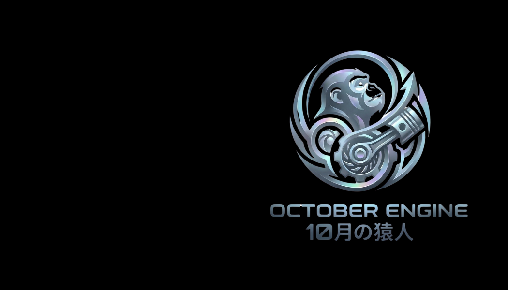

営業・実装・デザイン・文章・動画・SNS・
教育まで
目的設計・優先順位が曖昧なまま導入が先行。「何を改善し、どこから効かせるか」が決まらず、止まりやすい。
運用設計やテンプレが無く、属人的な利用に。仕組み化できず「続かない」「品質が揺れる」状態に陥る。
売上・工数・CV・発信KPIなど、指標に接続できない。価値が説明できず、継続投資が難しくなる。
これらは「人材の寄せ集め」では解けません。必要なのは、設計・実装・運用・教育をチームで回す体制です。
複雑を、シンプルな成果へ。
AI・業務・制作・集客が絡む課題を整理し、実装し、運用し、価値として定着させます。
AI人材の寄せ集めではなく、役割が連携する"チーム設計"で成果まで到達します。
業務効率化／プロンプト設計／テンプレ整備／定着支援（簡易レクチャー・運用設計）
Web／LP／コピーライティング／デザイン／動画制作／ブランド表現（世界観づくり）
SNS運用／コンテンツ導線設計／収益化設計／運用改善（KPIで回す）
役割が連携することで、AI活用を「導入」から「成果」へ。必要なユニットから柔軟に編成します。
まず「何を、どこから」改善するかを明確に
▶ 改善ロードマップ／即効施策案／優先順位を"見える化"
短期間で仕組みを実装し、運用に載せる
▶ 営業資料／SNS運用／記事・台本制作／問い合わせ対応の型化
まずは診断で「最短で効くポイント」を特定し、スプリントで実装。必要に応じて顧問・制作・教育へ拡張できます。
LP〜SNS〜動画を「売れる導線」に統合
▶ LP／投稿テンプレ／台本・編集プリセット／導線設計図（KPI含む）
運用を回し、成果が出るまで改善し続ける
▶ SNS運用の改善／問い合わせ対応の型化／提案・制作の効率化
まずは導線を整え、運用を回しながら改善。必要に応じてスプリント（実装）や教育支援へ拡張できます。
導入で止めず、現場の運用ルール・テンプレまで整備して定着させます。
システム/プロンプトの実装と、文章・デザイン・動画での伝達が同居。
診断→スプリントで、短期間に"使える仕組み"として提供します。
工数・売上・CV・制作本数などKPIに接続し、改善を継続します。
課題に合わせてユニットを組み替え。単発支援で終わらせず、役割分担されたチームで「実装→運用→改善」を回します。
提案書づくりを"型"にして速くする
課題：提案資料の作成に時間がかかり、提案数が伸びない。
施策：提案テンプレ＋プロンプト整備、構成/言い回しを標準化
制作フローを定型化して継続
課題：投稿・動画が属人化し、更新が止まりやすい。
施策：台本テンプレ／編集プリセット、投稿カレンダー＋チェック体制
訴求と導線を磨き、CVを改善
課題：反応が伸びず、問い合わせに繋がりにくい。
施策：コピー最適化（訴求整理）、CTA/導線の再設計
※母数や導線条件により変動
事例の基本形：課題 → 施策 → KPI（工数削減／売上・CV改善／制作本数／継続率など）。数値は実績に合わせて提示します。
目的・課題・現状を整理し、優先順位と最短ルートを仮説化します。
業務フローを可視化し、工数削減ポイントと導入優先順位を"見える化"します。
プロンプト／テンプレ／運用ルールを整備し、現場で回る状態まで実装します。
KPIと制作フローを回し、詰まりを潰して改善サイクルを作ります。
運用を継続しながら、内製化・研修・集客導線の拡張まで広げます。
最短は「無料相談→診断→スプリント」。状況により、制作（LP/SNS/動画）や教育（研修・内製化）を組み合わせます。
業務フローを可視化し、工数削減ポイント／優先順位／即効施策を提示。
目的と現状を整理し、最短ルート（優先順位・次の一手）を仮説化します。
⚛ 10月の猿人
AIで、次の仕事をつくる。複雑を、シンプルな成果へ。
※価格は税別です。内容・期間は要件により調整します。
守秘義務のもとでヒアリングし、最適な進め方をご提案します。